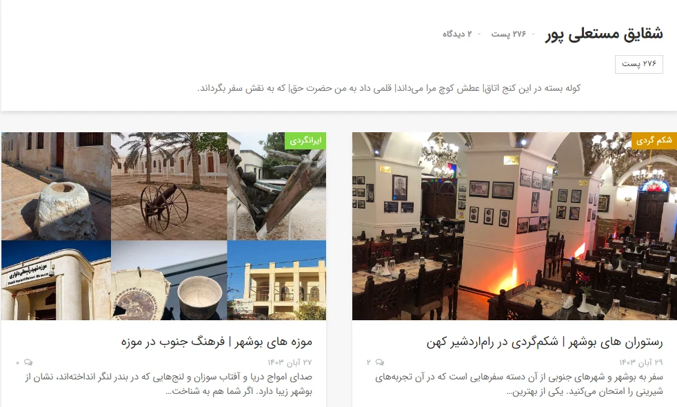

← Back to work
SELECTED WRITING / Published work
Words with a public trail.
Search-focused travel articles, book-related editorial writing, and a visible author record.
PROJECT NOTESPublished workDiscuss a project ↗
01
Travel & SEO content
The Rahbal Aseman author archive lists 276 posts under my name. The articles cover places, travel planning and useful answers to readers’ questions.
02
Books & culture
My Taaghche author page collects writing about books and reading culture. A published review of The Forty Rules of Love displayed 389,861 views on the publisher’s page when captured in November 2026.
03
A note on the links
Browse the published work through the author archives or open a selected travel article using the source links below.
